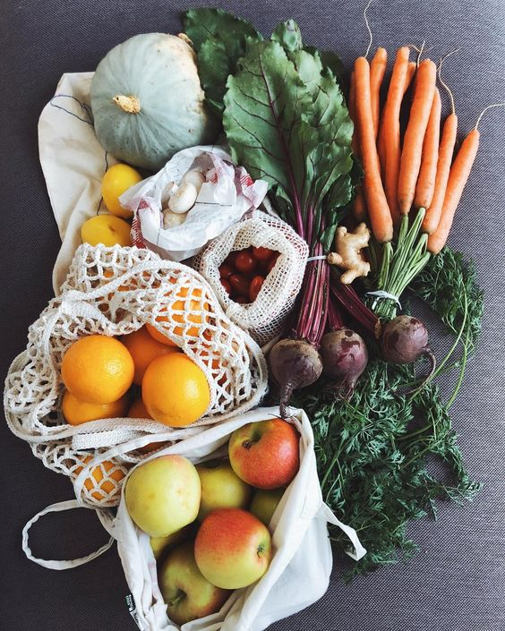
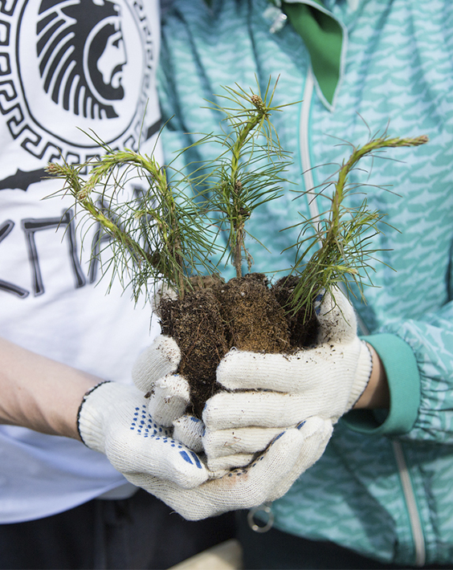
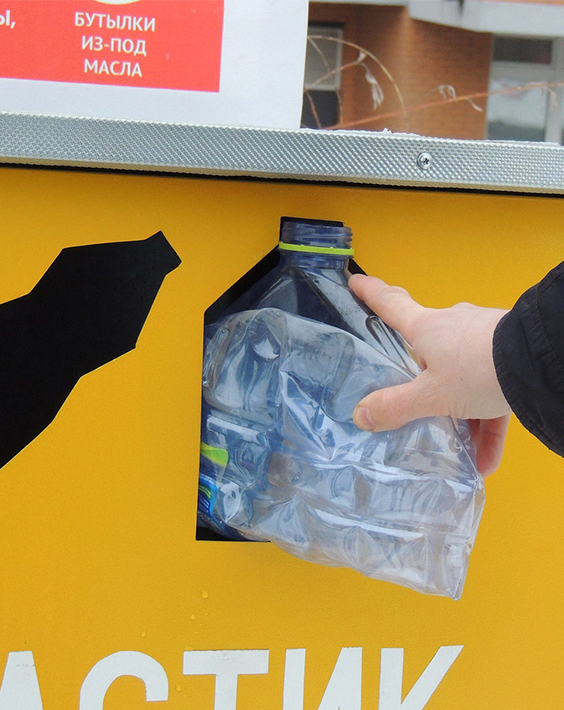

Екологічний Спосіб життя
Яким буде наш спільний дім завтра - відповідальність кожного з нас. Важливо навчитися бути відповідальним громадянином з дбайливим ставленням до навколишнього середовища. Більшість людей впевнені, що почати вести екологічний спосіб життя складно, дорого і енергозатратно.
Насправді це не так, все дуже просто, якщо виконувати декілька простих правил.
Zero waste
З кожним днем всесвітня гора сміття зростає, і гора ця практично не має терміну розпаду. Вона губить тварин і мешканців океанів, згубно відбивається на нашому здоров'ї. Крім того, ресурси планети стрімко зменшуються.
Нуль Відходів починається з відмови від непотрібних речей. Використовуйте речі, які у вас вже є, щоб зменшити споживання і берегти ресурси.

Заходи
Перелік цікавих та корисних еко-заходів: флешмоби, виклики, інформаційні кампанії, вебінари, конференції та еко-прибирання Харкова.
Долучайся до години землі та віддавай свій голос за планету заради відновлення екосистем.

Пункти прийому
Інтерактивна мапа пунктів прийому використаних батарейок, люмінесцентних ламп, градусників, макулатури, пластику, скла і навіть ганчір’я.
Натиснувши на конкретний пункт, можна дізнатися адресу, телефон, час роботи та назву підприємства, яке займається цією діяльністю.